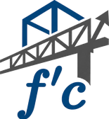

f'c estructural
Análisis y diseño estructural
Ampliación a segundo nivel
Casa El Dorado
📍 Boca del Río, Ver.
📄 Planos
(PDF)
🌙
←
Proyectos
Arrastra para girar · rueda para acercar · pasa el cursor sobre un elemento
3D
Planta
Frente
Lado
Capas